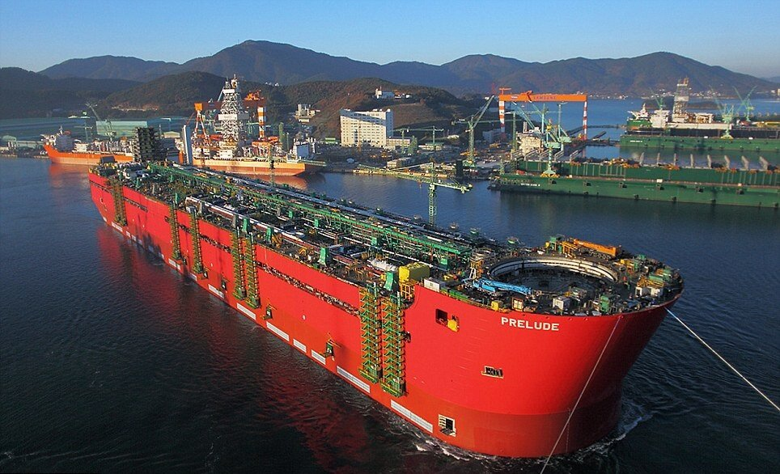

Prelude
Длина: 488 метров
В 2013 году на воду была спущена самая большая платформа в мире. Prelude FLNG является первым в мире плавучим заводом Shell для добычи и производства сжиженного природного газа.
Он создан для добычи газа в тех местах, куда невозможно проложить трубопровод. Завод работает в 200 км от побережья Австралии.
Prelude FLNG вмещает 240 рабочих, которых Shell регулярно доставляет на вертолетах. Водоизмещение Prelude FLNG при полной загрузке составляет 600 тысяч тонн, что в 6 раз больше, чем у авианосца Nimitz.
Ходовых двигателей у платформы нет. Но она оснащена тремя моторами на 6700 л.с. для маневрирования.